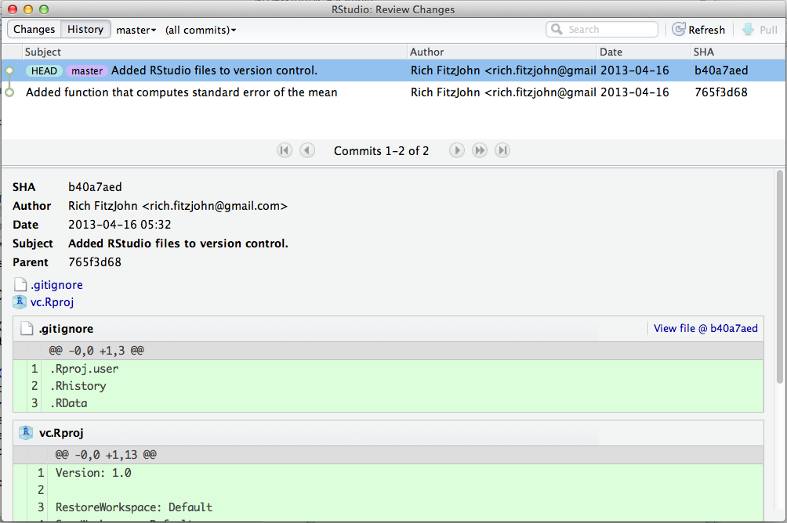

Git basics
Rstudio has super simple point-and-click version control (via git) baked in for “projects”. No excuses for not using it! (via @danmcglinn)
— Rich FitzJohn (@phylorich) February 11, 2013
Baby steps with RStudio
RStudio has git built in, and we’re going to use that to get started. The set of things you can do with git through RStudio is quite limited, but if you’re doing your work there already, it will be quite convenient.
First, make a branch new project (see this post, but essentially Project: Create Project).
Click the “Rproj” file in the “Files” pane, or click Projects: Projects Options to open the project options. Select the bottom entry in the ribbon (Git/SVN), and select Git from the drop-down menu. RStudio will prompt you to confirm, and then again to restart – click “Yes” both times.
Now the top right panel has a “Git” tab, which should look like this

The two question marks next to the files indicate that they are not known to git.
Adding and committing files to git
Make a new R script (say, script.R, imaginatively), and edit it,
perhaps to say:
1 2 3 | |

Our new file is now listed, also with question marks as it also not known to git.
If you click the check box next to script.R, the two question marks
change to one “A”. This indicates that the file has been “added”
(specifically, we’ve added it to the staging area, indicating that we
are planning on making that file part of the next revision of the
project).

This file is still not under version control though; we’ve just indicated our intention to add it. Click the “Commit” button (with the little tick mark) and the “Review Changes” window opens.

Enter a descriptive message about your change here. Convention suggests a one line informative message, which is if necessary followed by a blank line and a more detailed message if the change warrants it. I added the message:
1
| |
The pane on the left indicates the state of your directory (in this project two “unknown” files and one staged to be commited. The bottom pane contains the changes – in this case the entire file is new so everything is green.
When you are happy, press “Commit”, and a small log window opens up telling you everything went well. Mine said:
1 2 3 | |
Notice that the file we added has been removed from the Git pane. This is because there are no operations that we might want to do to update the history of that file (i.e., it is up to date).
There are two other files here; a .gitignore file and a file called
vc.Rproj (or your_project_name.Rproj). The first is useful for
keeping track of which files we don’t want to keep track of (e.g.,
generated figures, data, etc), and the Rproj file is how RStudio
keeps track of things. I added these (tick checkboxes, then Commit,
with message Added RStudio files to version control.).
Viewing history
In the git pane, click “More” (with the small cog) and click “History”. This opens up a window also labeled “Review Changes” that shows the history for the project.

The two revisions are indicated by the two rows in the top panel, with the most recent version at the top, and time running backwards down the list. You can see the short line added as a commit messages, along with the author who made the change and the date the change was made. The numbers in the far right column are a “SHA hash” – we’ll talk about these later, but think of it as a fingerprint for that version.
The bottom panel includes information about the selected version
(versions are also often called commits, so RStudio says “Commits 1-2
of 2”). This includes the same information more verbosely, then lists
the two files that changed (.gitignore and vc.Rproj) and then the
difference between these and the previous version of the files.
Because this is the first version of the files, everything is new, so
all lines are green.
Making changes
Edit the script.R file to say
1 2 3 | |
The git pane now shows that script.R has been modified:

If you click the check box to stage the file, the “M” moves to the left to indicate that this change has been staged. Then commit the file with an appropriate message, in my case:
1
| |
If you view the history again, this time you can see red lines indicating deletions and green lines indicating additions.